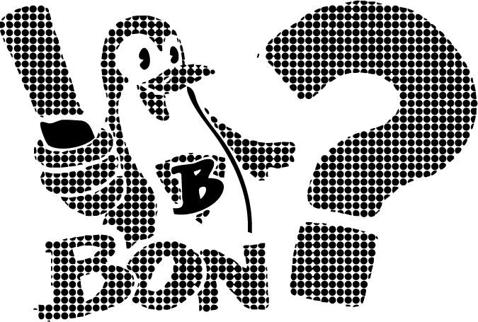

¡Intenta acercarte a mí! 🏃♂️
Cuando te acerques... ¡HUIRÉ!
¿Qué cree tu sombra cuando te ve caminar?
🎉 CERRADO
¿Cuántos pensamientos se te escapan al día cuando parpadeas?
0
“Esperaba cualquier cosa, pero eso… eso sí que no lo esperaba de ti.”
Control de Volumen (INVERTIDO)
Volumen: 50%
Mover el slider aumenta/evita el volumen real de forma INVERSA.
¿Cuál es tu color favorito cuando tu cerebro está en modo avión?
Blanco, porque parece que está pensando pero en realidad no.
Reto de Raspado
¿Cuál era tu sabor preferido, ese que escogías sin pensarlo, como si tu lengua tuviera GPS propio?.
